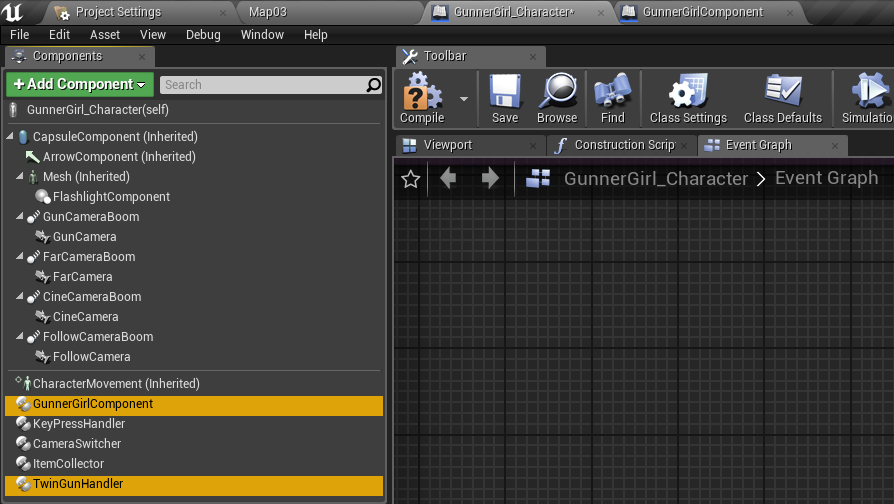
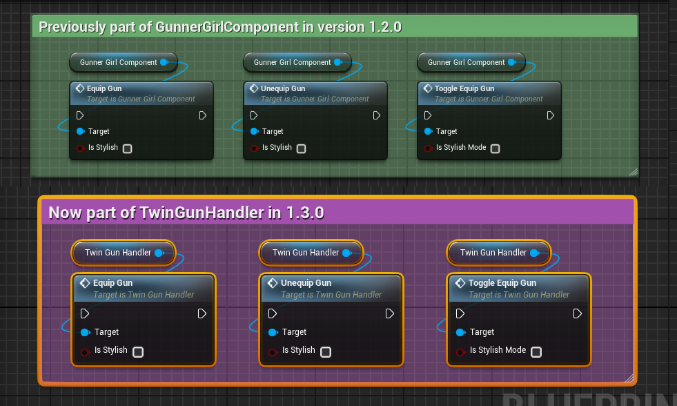
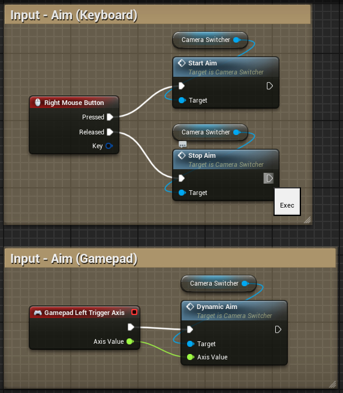
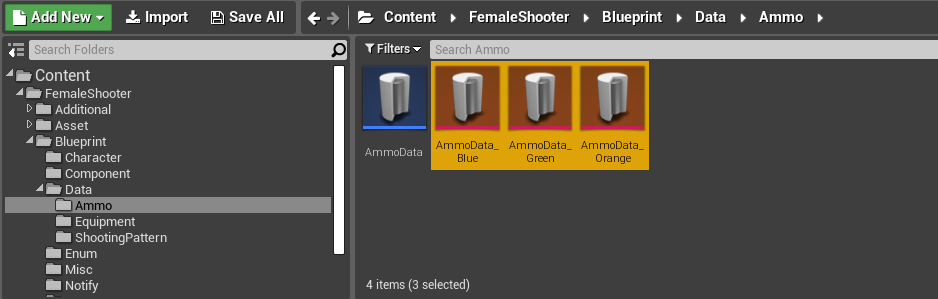
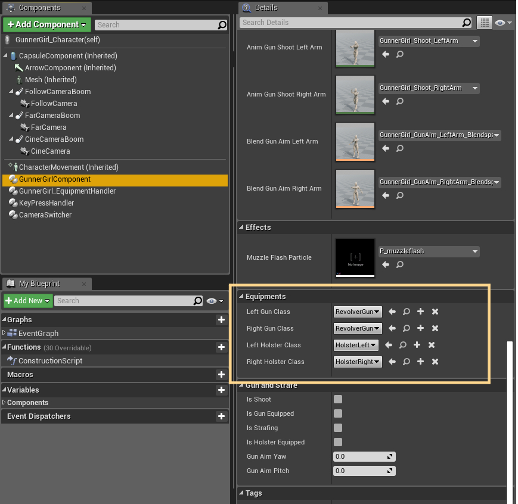
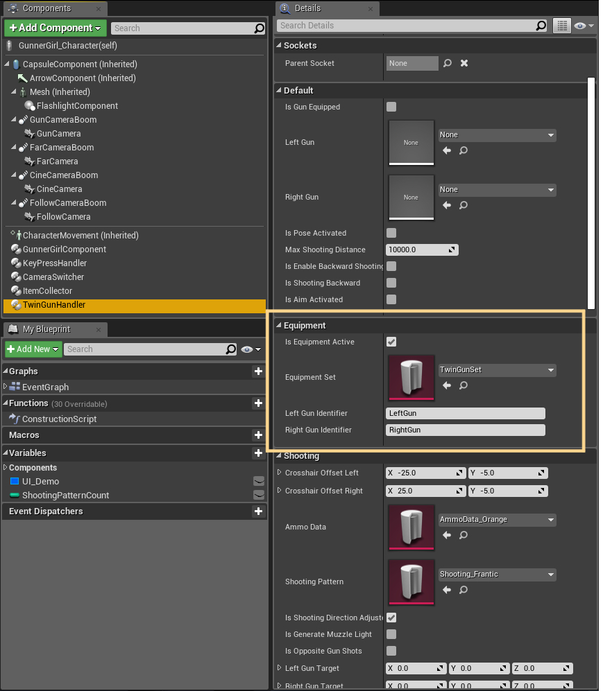

How to Use Guide 1.3.0
Overview
This article is intended for those who have previously used Female Shooter version 1.2.0 in their project.
There are several new features that was added to 1.3.0, most of them were added to implement the dual shooting/projectile mechanism to the template as well as to facilitate a more modular approach to the system as a whole.
Required Components
In Female Shooter 1.3.0, the functionalities are mostly separated into 2 components.
- GunnerGirlComponent, which handles most of the locomotion
- TwinGunHandler, which handles parts related to the shooting mechanism
CameraSwitcher also take a slightly larger role to handle the camera aspect of the character, specifically the aim function

To showcase how to use these components, please check inside the Content/FemaleShooter/Blueprint/Character folder.
You will find 2 Character Blueprints there,
- The GunnerGirl_Character, which serves as an example of how to use the full functionalities of the package,
- And the ThirdPersonModCharacter, which serves as an example on how to add only the dual gun shooting mechanism to your existing character.

For this guide, we will focus on the GunnerGirl_Character blueprint.
Open the blueprint file and head to the event graph, the changes from 1.2.0 to 1.3.0 will be listed in the sections below.
Gun Equip/Unequip Functions
The Gun Equip/Unequip functions was previously part of the GunnerGirlComponent.
They are now assigned to TwinGunHandler.

Shooting Functions
Shooting now produces both a muzzle flash and a projectile that can affect the target that it hits.
The hand and arm animations of the character have also been adjusted to follow the direction of where the shot is directed.
In 1.3.0, the implementation of the functions was relocated from GunnerGirlComponent to TwinGunhandler.
The function names have also been updated,
Shoot ->StartShooting UnShoot ->StopShooting

Aim Mode
Aim Mode is currently available from the CameraSwitcher component.
To use this, you will first need to call

You can then use the following functions to activate/deactivate the AimMode

However, this is experimental at the moment, and might actually change in the future.
Muzzle Flash Effect
Previously, in 1.2.0, Muzzle Flash effect is part of the GunnerGirlComponent.
You can change it by selecting GunnerGirlComponent, go to the Details tab, Effects, and change the value of
In 1.3.0, the
This is a custom dataset object that controls settings related to the projectile.
The AmmoData setting can be found by selecting TwinGunhandler, go to Details tab, Shooting, and find the value of

You can change the values from either the details tab of the TwinGunHandler, or by using the
By default, the FemaleShooter package includes 3 default AmmoData setting that can be used as examples.
You can find it in Content/FemaleShooter/Blueprint/Data/Ammo.

If you open one of the AmmoData files there, you will find that the MuzzleFlashEffect property is registered inside.
There are several other properties that you can modify inside the dataset, including,
Bullet Mesh , the static mesh used for your bulletMuzzle Flash Effect , the muzzle flash effect that is generated when you shot a projectileTrail Effect , the bullet trail effect for your projectileImpact Effect , the effect played when your bullet hit somethingBullet Speed , the velocity of your bulletGravity , the effect of gravity on your bullet(0 means no effect from gravity, 1 is 1G normal gravity) Impact Modifier , how strong will the impact be when your bullet hit an object(this is affected by the bullet velocity) Lifetime , how long should your bullet stay alive before it got removed from the world
You can create your own custom AmmoData by creating a duplicate of one of the default AmmoData files above, and modifying the values.
However, if you wish to do it manually, the steps are available here
Changing Equipments
In 1.2.0, there are 4 equipments that can be assigned to the character.
Left Gun Class Right Gun Class Left Holster Class Right Holster Class

In 1.3.0, this approach is not used anymore.
User can instead set any amount of equipment they need on the character by changing the
You will still need to inform the system of the Identifier that you will be using for

You can change the EquipmentSet during runtime by calling
By default, the FemaleShooter package provides 2 default EquipmentSet that can be used as examples.
This can be found in Content/FemaleShooter/Blueprint/Data/Equipment.
Just like AmmoData, these are made using custom Data Asset.
If you want to create your custom EquipmentSet manually, the steps is the same as the one used to create an AmmoData.
If you open one of the example AmmoData, you will see a list of equipments.
Each equipment contains the following properties,
Identifier , this should be unique for each equipment.ActorClass , the blueprint actor class of your equipment, this is similar to the Left Gun Class/Right Gun Class used in 1.2.0StorageSocketName , this is the socket where your equipment will be attached to by defaultEquipSocketName , this is the socket where your equipment will be attached to when it's equipped This is mostly used for the guns, which can either be stored in the holster socket, or equipped in the hand socket.
You can add as much equipment as you need, as long as each have a different identifier.
The identifier you registered in this EquipmentSet will be the one used by the TwinGunHandler to locate your
Custom Animations
Previously, the animation variables used to implement custom animations are placed exclusively inside GunnerGirlComponent.
In 1.3.0, half of the animations was relocated.
The gun-related animations are now assigned to TwinGunHandler, while the locomotion parts still assigned to GunnerGirlComponent.
The list of animations that can be replaced by the user are as follows.
GunnerGirlComponent animations
- Walking/Running (
Blend Walk Run ) - Roll (
Blend Roll ) - Crouch (
Blend Crouch ) - Jump Start (
Blend Jump Start ) - Jump Loop (
Blend Jump Loop ) - Jump Landing (
Anim Jump Landing ) - Somersault (
Blend Somersault )
TwinGunHandler animations
- Gun Idle (
Anim Gun Idle ) - Equip Normal (
Anim Equip Normal ) - Equip Gunspin (
Anim Equip Spin ) - Unequip Normal (
Anim Unequip Normal ) - Unequip Spin (
Anim Unequip Spin ) - Gun Aim Pose for the arm/hands (
Blend Gun Aim ) - Left Hand Gun Shoot Pose (
Blend Shoot Left ) - Right Hand Gun Shoot Pose (
Blend Shoot Right )

The property
This will control whether the system should fallback and play the default animations included with the package, if there is no custom animations registered from the GunnerGirlComponent.
To make it a bit clearer,
- If the property is set to
false, user will need to provide all of the custom animations required to ensure that the system works as intended. - If the property is set to
true, user can provide only the animations that they wish to change, the rest of the empty ones will be handled by the default animations.
Shooting Pattern
Starting from 1.3.0, you can adjust the Shooting Pattern of your character.
The setting is implemented using Data Asset, just like AmmoData and EquipmentSet.
The value can be found in the Details tab of TwinGunHandler, find Shooting, and navigate to ShootingPattern.

You can change the value of the ShootingPattern during runtime by calling
The FemaleShooter package provides 6 default ShootingPattern as examples.
These patterns can be found in Content/FemaleShooter/Blueprint/Data/ShootingPattern.
Two of them, Shooting_LeftOnly and Shooting_RightOnly, are specifically set to facilitate the individual shooting system.
If you open one of the files, you will see a list of entries.
The properties are explained below,
Label , the label used for your ShootingPattern setting
This isn't used for much at the moment, mostly to inform the User Interface of the active ShootingPattern that you're currently using.ShootingHand , which is the hand where your projectile will be shot from
The valid values areLeftHand andRightHand .
BothHands is not considered as a valid value for the current version.NextDelay , which is the cooldown time until the next projectile is allowed to be shot from the guns
For precaution, make sure not to set the value to a very low number.
A very low value might end up with the projectile not getting spawned.
You can create your own custom ShootingPattern by creating another Data Asset, just like you did with AmmoData and EquipmentSet.
The steps are the same.
Multiplayer Replication (Not Supported)
No multiplayer replication features will be supported as of version 1.3.0.
This is unfortunate, but the (experimental) multiplayer features that was introduced in 1.2.0 will not be carried to 1.3.0.
This is mostly due to difficulties in maintaining and testing the replications with several new features introduced into the package.
How to Use Guide
To proceed and learn how to implement the FemaleShooter 1.3.0 package into your project, see the next page.